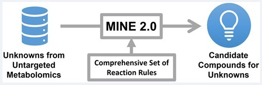
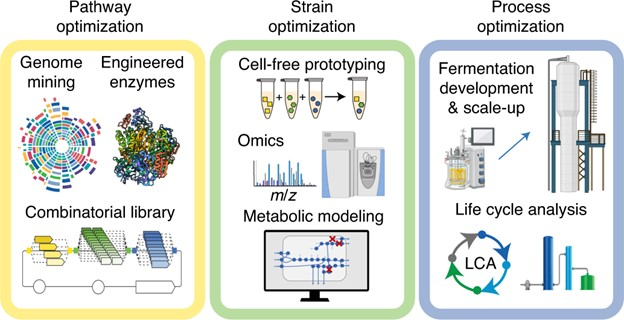
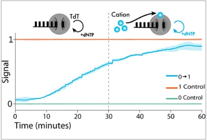

- Code Samples -
A few examples of my work in software development:
- TURTLES: A python library I wrote during my PhD to process DNA sequencing data from DNA sequences synthesized by a custom enzymatic system (python)
- Fixed a bug where the .docx parser used by Haystack would not recognize page breaks (python)
- Added a new feature to HuggingFace's open-source LLM Chat App that adds auth-based user permissions for LLM models (TypeScript)
- The code for this website (HTML/CSS)
- Research Tools -

MINE Database Website: Useful for discovering novel biological compounds in metabolomics datasets. Built using AngularJS, Flask, and MongoDB. See the backend repo, frontend repo, and compound prediction repo for more information.
- Selected Publications -
Strutz J, Shebek K, Broadbelt L, Tyo K (2022) MINE 2.0: enhanced biochemical coverage for peak identification in untargeted metabolomics. Bioinformatics, 38(13):3484-3487.
Liew EF, Nogle R, Abdalla T, Rasor BJ, Canter C, Jensen RO, Wang L, Strutz J, ..., Köpke M (2022) Carbon-negative production of acetone and isopropanol by gas fermentation at industrial pilot scale. Nature Biotechnology, 40:335-344.
Bhan NJ, Callisto A, Strutz J, Glaser J, Kalhor R, Boyden E, Church G, Kording K, Tyo KEJ (2021) Recording Temporal Signals with Minutes Resolution Using Enzymatic DNA Synthesis. Journal of the American Chemical Society, 143:16630-16640.

Strutz J, Martin J, Greene J, Broadbelt L, Tyo K (2019) Metabolic kinetic modeling provides insight into complex biological questions, but hurdles remain. Current Opinion in Biotechnology, 59:24-30.
See all my publications on my Google Scholar profile.